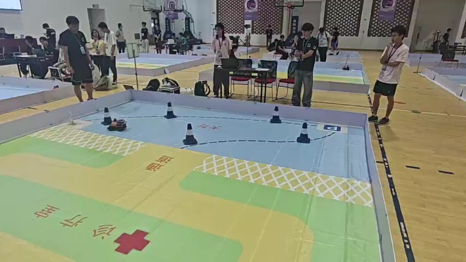

Project overview项目介绍
Smart Healthcare Car智慧医疗智能车
21st National Intelligent Car Competition
D-Robotics Smart Healthcare Challenge第二十一届全国大学生智能汽车竞赛
地瓜机器人智慧医疗挑战赛
For a simulated healthcare mission, our team built an autonomous car that connects perception, local waypoint prediction, motion control, and task switching into one ROS 2 system. The car reads task cues, follows the assigned route, avoids obstacles, and returns to the finish.
围绕模拟医疗场景中的自主通行任务，我们把环境感知、局部目标点预测、运动控制和任务切换整合为一套 ROS 2 智能车系统。车辆需要读取任务信息、通过指定路线、避障并返回终点。

From sensing to motion从感知到运动执行
A short, closed chain from camera and LiDAR observations to chassis feedback.
将相机与雷达观测转成目标点和底盘动作，再用车辆状态形成反馈。
See the course感知赛道
USB camera and N10 LiDAR collect visual and spatial cues.
USB 相机与 N10 激光雷达采集图像和空间信息。
Set a waypoint预测目标点
The image–radar fusion model predicts a local waypoint.
图像—雷达融合模型预测局部目标点。
Plan the motion生成控制量
The upper computer generates speed and steering commands.
上位机生成速度与转向指令。
Drive and report执行与反馈
STM32 drives the Ackermann chassis and reports vehicle state.
STM32 驱动 Ackermann 底盘，并回传车辆状态。
RDK X5 · ROS 2 · mission state machine for navigation and task transitions.
RDK X5 · ROS 2 · 任务状态机负责导航和任务切换。
The car in motion赛场运行实拍
Footage from the competition course, with three stills selected from the same recording.
比赛赛道上的运行录像，下方三张画面均截取自同一段视频。



At the national finals全国总决赛现场
This was a team project at the 2026 competition. The vehicle and its integrated system earned awards at both the national and regional rounds.
这是 2026 年竞赛中的团队项目。车辆及整套系统在区域赛和全国总决赛均获得奖项。